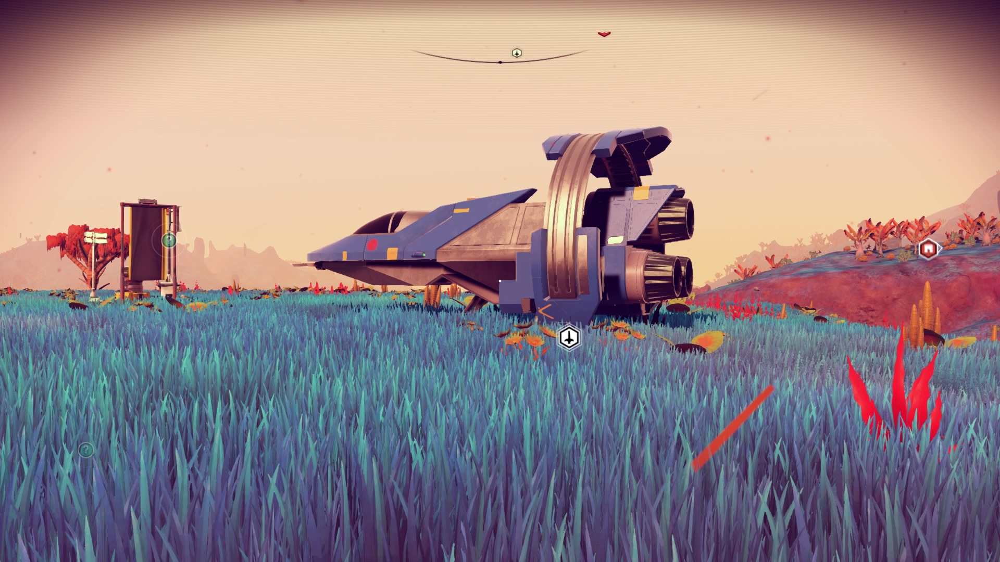
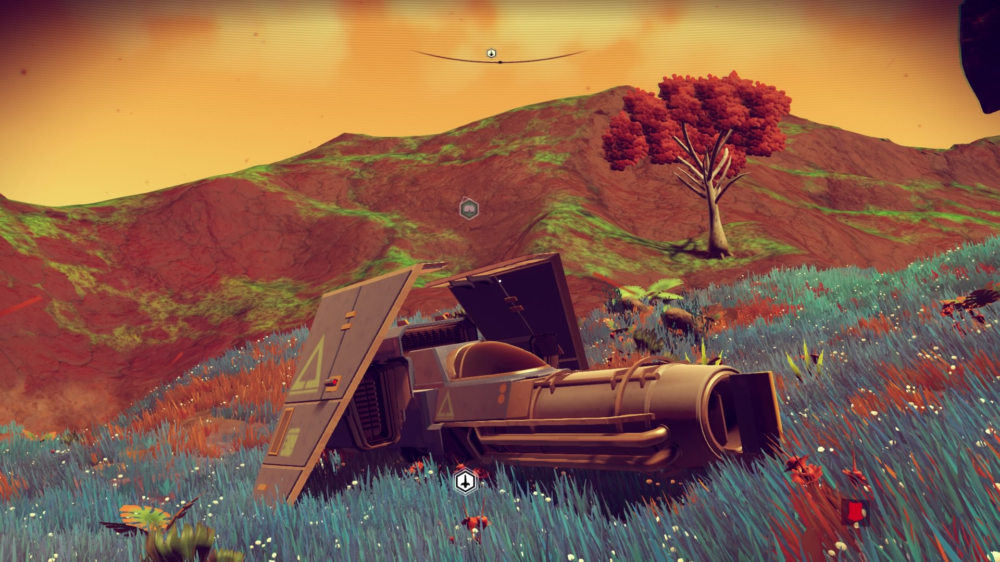
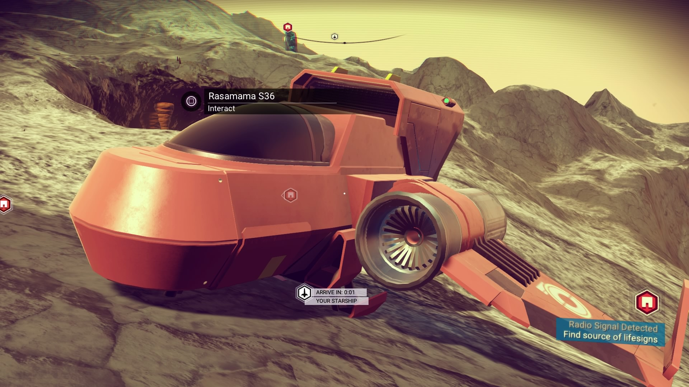
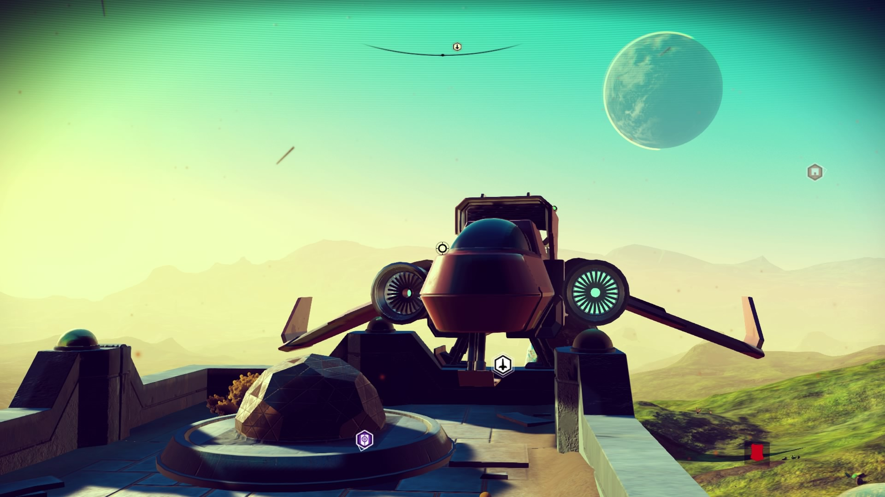

Spacecraft
Here are the spacecraft we’ve each respectively used, listed in reverse-chronological order.
Cliff
Izumotosa S77

25 slots.
Ozawarak S27
Two variants, first with 18 slots, and now with 22 slots.

Rasamama S36
What can I say? This big toe of a space ship got the job done.

Emma
Ookaichine S78

Rasamama S36
